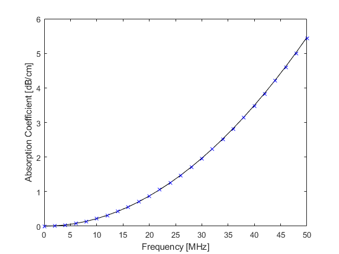

waterAbsorption
Calculate ultrasound absorption in distilled water.
Syntax
abs = waterAbsorption(f, T)
Description
waterAbsorption calculates the ultrasonic absorption in distilled water at a given temperature and frequency using a 7th order polynomial fitted to the data given by Pinkerton (1949, The Absorption of Ultrasonic Waves in Liquids and its Relation to Molecular Constitution, Proceedings of the Physical Society. Section B, 2, 129-141). A plot of the absorption at 20degC returned by waterAbsorption along with the absorption calculated by the corresponding power law given by Szabo (2004, Diagnostic Ultrasound Imaging) is given below.
% calculate absorption between 0 and 50 MHz f = 0:2:50; % [MHz] abs = waterAbsorption(f, 20); % [dB/cm] % plot absorption and power law figure; plot(f, abs, 'k-', f, 2.17e-3 * f.^2, 'bx'); xlabel('Frequency [MHz]'); ylabel('Absorption Coefficient [dB/cm]');
Inputs
f |
array of frequency values [MHz] |
T |
array of water temperature values [degC] |
Outputs
abs |
absorption [dB/cm] |
See Also
waterDensity, waterNonlinearity, waterSoundSpeed